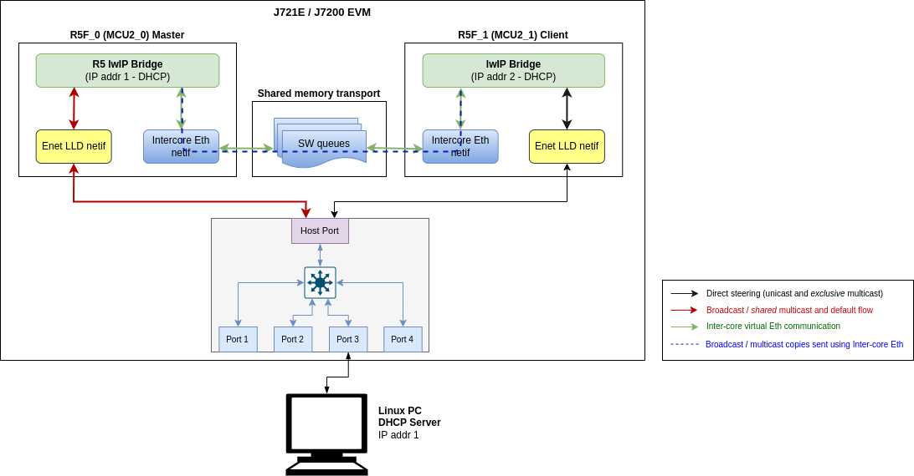

Introduction
The applications that are part of this demo show Jacinto 7 integrated switch differentiating features like interVLAN routing in hardware, firewall, packet header based classification and rate limiting along with Layer-2 switching with VLAN, multicast and software-based interVLAN routing among the ports. The traffic forwarding process among the ports don't require CPU involvement or DMA bandwidth as everything is completely handled by CPSW hardware.
The intention behind this demo which encompasses multiple sub-demos is to show the switching capabilities of the J721E/J7200 integrated Ethernet Switch (CPSW9G or CPSW5G) as well as the software developed which includes Enet low-level driver (Enet LLD), lwIP TCP/IP integration and Ethernet Switch Firmware (EthFw) application.
Below are top-level features demonstrated:
- Basic L2 switching
- Switching with VLAN
- Multicast switching
- Send/receive packets over TCP/UDP
- Support for remote cores (Linux and FreeRTOS)
- Software-based interVLAN routing
- Hardware-based interVLAN routing
- IP next header filtering
- MAC address based rate limiting
- Time-synchronization using gPTP
- Multi-core time-synchronization with RTOS client
- Software based inter-core virtual Ethernet communication
The Ethernet Firmware demo application is in charge of:
- Opening the CPSW modules like ALE, MAC ports, host port and UDMA
- Opening and configuring the MAC ports along with corresponding PHYs present in the GESI expansion board at RGMII/RMII 1Gbps mode in J721E EVM, or the QpENet expansion board in J7200 EVM.
- Initializing lwIP stack
This application runs with the GESI (Gateway/Ethernet Switch/Industrial Expansion Board) board on J721E EVM and with the QPENet (Quad Port Eth Expansion Board) board on J7200 EVM. The demo requires two PCs running Ubuntu connected to the GESI or QPEnet board in order to demonstrate the L2 switching capabilities as well as to generate and monitor Ethernet traffic at different stages of the demo. The connection diagrams for the respective EVMs are shown below.
Connection diagram for J721E EVM with GESI Daughter Card
EthFw demo connections diagram - J721E EVM
Connection diagram for J7200 EVM with QpENet Daughter Card
EthFw demo connections diagram - J7200 EVM
Connection diagram for J784S4 EVM with QpENet Daughter Card
EthFw demo connections diagram - J784S4 EVM
Note: The IP addresses shown in above diagram are only for example and can change based on your network configuration.
A GUI-based control interface to enable/disable/configure features like VLAN, multicast, rate limiting, interVLAN routing and also to show the load of the CPU is added in the release.
A Remote Client application for the Main R5F core 1 is also available as part of this demo. This application runs a local lwIP stack on a virtual network device which demonstrates the RTOS switch remote core integration.
Dependencies
This application depends on multiple components and are detailed in sections below:
- FreeRTOS: Uses Task, Semaphore, Interrupt Handling HWI.
- PDK
- Board library: Required for the configuration of pin muxing, clocking, etc.
- OSAL library: Provides the abstraction layer implementation for TI RTOS
- UART driver: Required to print output messages to serial port
- GPIO driver: Required to drive PHY reset lines and I/O mux switch
- UDMA driver: Required for global level initialization of the UDMA driver
- Enet driver: Provides an interface for the application to configure the control path of the CPSW switch, as well as the interface to send and receive Ethernet frames to/from CPSW's host port
Back To Top
Compile Time Configurations
Ethernet Firmware Demos Configuration
Starting in SDK 9.0 release, the default Ethernet Firmware standalone RTOS application no longer enables the following demos: GUI configurator tool, hardware and software interVLAN, IP next hader filtering and rate limiting.
User must recompile ETHFW in order to enable these demos:
make ethfw_all BUILD_SOC_LIST=<SOC> ETHFW_DEMO_SUPPORT=yes
Back To Top
Demo Setup
Prerequisites
packETH tool
Note: packETH tool is required only in PC 1.
Install packETH packet generator tool on the Linux PC. The Ubuntu installation instructions can be found in their website.
The packEth configurations used in this demo are included in the Ethernet Firmware package at <ETHFW_PATH>/docs/packeth_configurations/
Note: Please check licensing information and terms of usage of packETH tool and make sure it adheres to your organization's policy before using and configuring it.
Python3 and Pip3
The CPSW Remote Configuration GUI tool is developed using Python3 and PyQt. Pip3 can be used to install additional Python modules required by the GUI tool.
Note: The GUI tool can be executed from either PC 1 or PC 2, so Python and its dependencies must be installed only on the selected PC.
Install Python3, PyQt, pip3 and other dependencies:
sudo apt install python3-pip
pip3 install --user pyqt5
sudo apt-get install python3-pyqt5
sudo apt-get install pyqt5-dev-tools
sudo apt-get install qttools5-dev-tools
pip3 install jsonschema pyserial serial xmodem
Wireshark
Note: Wireshark packet analyzer tool is required in both PC 1 and PC 2.
Refer to the Wireshark installation instructions on Ubuntu in this website.
iperf
Note: iperf network performance measurement tool is required on either PC 1 or PC 2.
Install iperf in the selected Ubuntu PC(s):
sudo apt-get install iperf
bmon
Note: bmon is required only on PC 2.
bmon is a network bandwidth monitoring tool that will be used in this demo to monitor the traffic received on PC 2 during the interVLAN tests.
Install bmon in the Ubuntu PC as follows:
sudo apt-get install bmon
After installing bmon, enable promiscuous mode on the network interface using,
sudo ifconfig eth0 promisc
This is required to capture VLAN tagged packets in the PC. Since fixed VLAN tags, IP & MAC addresses are used in the demo, PC's network interface will drop these packets as they are not addressed to it. To avoid this, promiscuous mode should be enabled on the network interface.
DHCP Server
Note: DHCP server is required only in PC 1.
A DHCP server is required to assign IPs dynamically to all internal cores (A72, Main R5F core0, Main R5F core1) or external devices (PC 1, PC 2) in this demo.
- Refer to the DHCP installation and setup instructions on the Ubuntu website for further details.
- A possible configuration could be:
subnet 192.168.1.0 netmask 255.255.255.0 {
range 192.168.1.200 192.168.1.210;
...
}
- Set the PC 1 IP to
192.168.1.<pc1> and the restart the DHCP server.
Static IP (Optional)
If dynamic IP configuration is not possible, static IPs can be setup as follows:
For Ethernet Firmware server, set below flag in ethfw/apps/app_remoteswitchcfg_server/mcu_2_0/main.c to disable DHCP and use static IP instead:
#define ETHAPP_LWIP_USE_DHCP (0)
The static IP address, gateway and netmask can be set also in the same file.
#define ETHFW_CLIENT_IPADDR(addr) IP4_ADDR((addr), 192,168,1,201)
#define ETHFW_CLIENT_GW(addr) IP4_ADDR((addr), 192,168,1,1)
#define ETHFW_CLIENT_NETMASK(addr) IP4_ADDR((addr), 255,255,255,0)
For RTOS client application, set below flag in ethfw/apps/app_remoteswitchcfg_client/mcu_2_1/main.c:
#define ETHAPP_LWIP_USE_DHCP (0)
The static IP address, gateway and netmask can be set also in the same file.
- For Linux,
sudo ifconfig <ethDeviceName> 192.168.1.x netmask 255.255.255.0 up
- For Windows, refer to the following website for suggested instructions about static IP configuration under a Windows environment.
| Device | IP address |
| PC 1 | 192.168.1.202 |
| J721E/J7200/J784S4 Main R5F core (running EthFw) | 192.168.1.203 |
| PC 2 | 192.168.1.204 |
| J721E/J7200/J784S4 A72 core (virtual net driver) | 192.168.1.205 |
| Default Gateway | 192.168.1.1 |
| Subnet Mask | 255.255.255.0 |
Note: Make sure that all IPs assigned manually are in the same subnet as the Ethernet Firmware.
gPTP stack
gPTP stack is initialized when Ethernet Firmware RTOS application calls EthFw_initTimeSyncPtp() function, and will continue to run in a separate task.
Once master-slave connection is established between either of the EVMs, slave prints logs showing the hardware/software clock adjustment rate in ppb (parts-per-billion) and difference in master-slave correction in nanoseconds.
This stack supports gPTP config parameters which can be configured in the stack via application, like phase adjustment, clock modes, phase offsets etc. By enabling some optimization config params, an accuracy around +/- 18 nanoseconds can be achieved with convergence time around 4500 msecs.
These params can be configured inside EthApp_configPtpCb() function in <ethfw>/apps/app_remoteswitchcfg_server/mcu2_0/main.c file.
int phase_alpha = 1;
int compute_intv = 100;
int mrate_ppb = 5;
int freq_alpha = 2;
gptpconf_set_item(CONF_PHASE_OFFSET_IIR_ALPHA_STABLE_VALUE, &phase_alpha);
gptpconf_set_item(CONF_FREQ_OFFSET_IIR_ALPHA_STABLE_VALUE, &freq_alpha);
gptpconf_set_item(CONF_CLOCK_COMPUTE_INTERVAL_MSEC, &compute_intv);
gptpconf_set_item(CONF_FREQ_OFFSET_UPDATE_MRATE_PPB, &mrate_ppb);
gPTP stack is enabled only in MAC port 3 in the default Ethernet Firmware configuration. When running gPTP demo, user must make sure that MAC port 3 is connected to the gPTP capable device (i.e. another EVM, PC, TSN switch).
Note: gPTP stack is enabled only on MAC port 3.
Note: gPTP stack is required on PC 2 or run ETHFW on another EVM.
Note: gPTP master (PC 2) should be connected to MAC port 3 in J721E. Refer to J721E GESI Expansion Board for MAC port numbers in J721E EVM. CPTS event lookup errors will be seen if connected to a different MAC port.
Note: gPTP master (PC 2) should be connected to MAC port 3 in J7200. Refer to J7200 Quad-Port Eth Expansion Board for MAC port numbers in J7200 EVM. CPTS event lookup errors will be seen if connected to a different MAC port.
Note: gPTP master (PC 2) should be connected to MAC port 3 in J784S4. Refer to J784S4 Quad-Port Eth Expansion Board for MAC port numbers in J784S4 EVM. CPTS event lookup errors will be seen if connected to a different MAC port.
Back To Top
CCS Boot
Prerequisites
Install Code Composer Studio and setup a Target Configuration for use with J721E, J7200 or J784S4 EVM. Refer to IDE (CCS).
Steps
- Connect a micro USB cable to JTAG port of J721E/J7200/J784S4_EVM. The XDS110 JTAG connector is labeled
XDS110. Alternatively, XDS560v2 debugger can be connected to the JTAG connected labeled JTAG MIPI.
- Connect a micro USB cable to MAIN Domain UART port on J721E/J7200/J784S4 EVM. It's labeled
UART.
- Set EVM's DIP switches
SW8 and SW9 for no-boot mode:
- SW8 = 10001000
- SW9 = 01110000
Open up a serial terminal for UART2 communication. This terminal will show logs from MCU2_0 core where the demo application runs.
- Set serial parameters to: 115200 8N1.
- Set hardware and software flow control to "No".
- Below figure shows serial parameters set in Minicom.
Serial Port Settings in Minicom
- Power on the J721E/J7200/J784S4 EVM board. Ensure that SD card is not present or QSPI flashed.
- Connect the laptops/PCs as per demo connections diagram above.
- Important: DHCP server (if required) must be connected to MAC Port 3.
- Note: Do not connect any device to MAC Port 1 if using J721E/J7200 EVM alpha version as it may not be functional, please refer to the Known issues sections for further details
- Load application binaries to Main R5F cores in the following sequence:
- Load Main R5F core 0: app_remoteswitchcfg_server_ccs.xer5f
- Load Main R5F core 1: app_remoteswitchcfg_client.xer5f
- Run Main R5F core 1
- Run Main R5F core 0
- Note: For loading demo application binaries through CCS on J721E/J7200/J784S4, please refer to CCS setup section in SDK top level documentation.
- Start Runtime Object View (ROV) in CCS for the Main R5F core 1 and navigate to the SysMin component in order to see the MCU2_1 client application's logs. This application doesn't use an UART port for logging.
Note: Linux running on A72 core is not compatible with CCS boot mode.
Back To Top
SD Card Boot
Steps
- Create a bootable SD card with Linux bootloader, kernel and file system. For details about SD card creation, refer to the Processor SDK Linux Automotive User's Guide.
Copy the demo application to the ethfw directory of Linux filesystem in SD card.
For J721E using FREERTOS:
cp <SDK_INSTALL_PATH>/ethfw/out/J721E/R5Ft/FREERTOS/debug/app_remoteswitchcfg_server_strip.xer5f <MOUNT>/rootfs/lib/firmware/ethfw/
For J7200 using FREERTOS:
cp <SDK_INSTALL_PATH>/ethfw/out/J7200/R5Ft/FREERTOS/debug/app_remoteswitchcfg_server_strip.xer5f <MOUNT>/rootfs/lib/firmware/ethfw/
If needed, update the soft-link j7-main-r5f0_0-fw or j7200-main-r5f0_0-fw to point to the demo application copied to SD card in the previous step.
For J721E:
cd <MOUNT>/rootfs/lib/firmware/
ln -sf ethfw/app_remoteswitchcfg_server_strip.xer5f j7-main-r5f0_0-fw
For J7200:
cd <MOUNT>/rootfs/lib/firmware/
ln -sf ethfw/app_remoteswitchcfg_server_strip.xer5f j7200-main-r5f0_0-fw
Optional: Copy the remote client application to the firmware directory of Linux filesystem in SD card and update soft-link:
For J721E using FREERTOS:
cp <SDK_INSTALL_PATH>/ethfw/out/J721E/R5Ft/FREERTOS/debug/app_remoteswitchcfg_client.xer5f <MOUNT>/rootfs/lib/firmware/
cd <MOUNT>/rootfs/lib/firmware/
ln -sf app_remoteswitchcfg_client.xer5f j7-main-r5f0_1-fw
For J7200 using FREERTOS:
cp <SDK_INSTALL_PATH>/ethfw/out/J7200/R5Ft/FREERTOS/debug/app_remoteswitchcfg_client.xer5f <MOUNT>/rootfs/lib/firmware/
cd <MOUNT>/rootfs/lib/firmware/
ln -sf app_remoteswitchcfg_client.xer5f j7200-main-r5f0_1-fw
- Connect a micro USB cable to MAIN Domain UART port on J721E/J7200/J784S4 EVM. It's labeled
UART.
- Set EVM's DIP switches
SW8 and SW9 for SD card boot:
- SW8 = 10000010
- SW9 = 00000000
- Open up a serial terminal for UART0 communication. This terminal will show logs from Linux bootloader and kernel.
- Set serial parameters to: 115200 8N1.
Open up a serial terminal for UART2 communication. This terminal will show logs from MCU2_0 core where the demo application runs.
- Set serial parameters to: 115200 8N1.
- Set hardware and software flow control to "No".
- Below figure shows serial parameters set in Minicom.
Serial Port Settings in Minicom
- Insert SD card into slot labeled
MICRO SD and power on the J721E/J7200/J784S4 EVM board.
Back To Top
Running the Demo
Connecting External Devices
- For J721E EVM:
- Connect PC 1 to MAC port 3 of GESI board. Refer to the J721E EVM GESI Expansion Board section to find the right RJ-45 connector.
- Connect PC 2 to MAC port 8 of GESI board.
- For J7200 EVM:
- Connect PC 1 to MAC port 3 of Quad Port Eth board. Refer to the J7200 EVM QPENet Expansion Board section to find the right RJ-45 connector.
- Connect PC 2 to MAC port 2 of QPENet board.
- For J784S4 EVM:
- Connect PC 1 to MAC port 3 of Quad Port Eth board. Refer to the J784S4 EVM QPENet Expansion Board section to find the right RJ-45 connector.
- Connect PC 2 to MAC port 5 of QPENet board.
Note: The demo application in this release assumes that external devices, PC 1 and PC 2, are connected prior to starting the demo. It's a mandatory step.
The IPs assigned dynamically to Main R5F cores 0 and 1 will be printed in the UART2 serial terminal.
Note: To ping IP of Main R5F core 1 (RTOS Remote Client), PC 1 has to be connected to MAC port 3 of GESI board for J721E, MAC port 3 of Quad Port Eth board for J7200 and MAC port 3 of Quad Port Eth for J784S4 respectively. Link status is only used on MAC port 3 to determine link up on virtual switch port.
Virtual Net Driver on A72
Once the EVM is booted along with Linux on A72, the virtual net driver module should be loaded and the eth1 network device corresponding to CPSW9G should be added.
- Verify this by running
ifconfig -a on Linux terminal console of the EVM.
- Activate network interface on A72 core as follows:
sudo ifconfig eth1 up
- At this point, data transfer with other devices connected to the network should be possible. Ping the two PCs connected to the switch:
ping 192.168.1.<pc1>
ping 192.168.1.<pc2>
- Similarly, ping the A72 core for either PC connected to the switch:
ping 192.168.1.<a72>
Back To Top
iperf
iperf with ETHFW server
lwIP iperf server (TCP-only) is enabled by default in Ethernet Firmware starting in SDK 9.0. iperf server is started when lwIP network interface is up. iperf can be demonostrated by running iperf client on any external devices, PC 1 or PC 2.
- Run iperf client on the selected PC. Set test duration with
-t option as needed. iperf -c 192.168.1.<r5f_0> -t 20 -i 1
Back To Top
iperf with virtual client
The CPSW switch is capable of steering network traffic without CPU intervention by classifying it based on its characteristics. This can be demonstrated by running iperf server on Linux running on the A72 core and iperf client on any of the external devices, PC 1 or PC 2.
- Start iperf server on Linux running on A72.
iperf -s
- Run iperf client on the selected PC. Set test duration with
-t option as needed. iperf -c 192.168.1.<a72> -t 20 -i 1
Back To Top
gPTP Stack
The gPTP stack demo can be run using two TI EVMs running ETHFW SDK 9.x or later. MAC port 3 is the only port where gPTP is enabled by default in Ethernet Firmware configuration, hence the demo requires connecting MAC port 3 on both TI EVMs. The diagram below shows the suggested setup.
EthFw gPTP demo connections with 2 TI EVMs
At runtime, both EVMs will negotiate which device runs as master or slave. ETHFW traces will show the MAC address of the device that will be running as master as shown in the log snippet below:
INF:gptp:000006-513181:domainIndex=0, GM changed old=70:FF:76:FF:FE:1E:01:C8, new=70:FF:76:FF:FE:1D:A0:26
By default, ETHFW configures gPTP logging to informational trace level to limit the amount of ETHFW traces. However, user may want to see the accuracy of the synchronization achieved on the slave device. This requires a change in the logging level in ETHFW library, from gptp:4 to gptp:5 as shown in below code snippet.
static void EthFw_tsnInit(void)
{
unibase_init_para_t params;
...
ubb_default_initpara(¶ms);
params.ub_log_initstr = "5,ubase:5,cbase:5,gptp:5";
...
unibase_init(¶ms);
...
}
With gPTP log level 5, the following traces can be seen in the master and slave devices. It's worth noting that these logs are captured using the optimization settings suggested in gPTP stack section.
gPTP master logs
domain=0, offset=0nsec, hw-adjrate=0ppb
gmsync=true, last_setts64=0nsec
domain=0, offset=0nsec, hw-adjrate=0ppb
gmsync=true, last_setts64=0nsec
domain=0, offset=0nsec, hw-adjrate=0ppb
gmsync=true, last_setts64=0nsec
domain=0, offset=0nsec, hw-adjrate=0ppb
gmsync=true, last_setts64=0nsec
domain=0, offset=0nsec, hw-adjrate=0ppb
gmsync=true, last_setts64=0nsec
domain=0, offset=0nsec, hw-adjrate=0ppb
gmsync=true, last_setts64=0nsec
domain=0, offset=0nsec, hw-adjrate=0ppb
gmsync=true, last_setts64=0nsec
domain=0, offset=0nsec, hw-adjrate=0ppb
gmsync=true, last_setts64=0nsec
gPTP slave logs
The traces will show the difference with respect to grand-master clock computed on the slave device. This can give an indication of the synchronization accuracy achieved in this demo.
IFV:gptp:domainNumber=0, clock_master_sync_receive:the master clock rate to 2099ppb, GMdiff=-5nsec
IFV:gptp:domainNumber=0, clock_master_sync_receive:the master clock rate to 2090ppb, GMdiff=-3nsec
IFV:gptp:domainNumber=0, clock_master_sync_receive:the master clock rate to 2084ppb, GMdiff=-3nsec
IFV:gptp:domainNumber=0, clock_master_sync_receive:the master clock rate to 2097ppb, GMdiff=-6nsec
IFV:gptp:domainNumber=0, clock_master_sync_receive:the master clock rate to 2106ppb, GMdiff=-2nsec
IFV:gptp:domainNumber=0, clock_master_sync_receive:the master clock rate to 2062ppb, GMdiff=-5nsec
IFV:gptp:domainNumber=0, clock_master_sync_receive:the master clock rate to 2081ppb, GMdiff=0nsec
domain=0, offset=0nsec, hw-adjrate=2080ppb
gmsync=true, last_setts64=0nsec
IFV:gptp:domainNumber=0, clock_master_sync_receive:the master clock rate to 2052ppb, GMdiff=-8nsec
IFV:gptp:domainNumber=0, clock_master_sync_receive:the master clock rate to 2084ppb, GMdiff=-2nsec
IFV:gptp:domainNumber=0, clock_master_sync_receive:the master clock rate to 2072ppb, GMdiff=-4nsec
IFV:gptp:domainNumber=0, clock_master_sync_receive:the master clock rate to 2075ppb, GMdiff=-5nsec
IFV:gptp:domainNumber=0, clock_master_sync_receive:the master clock rate to 2085ppb, GMdiff=-2nsec
IFV:gptp:domainNumber=0, clock_master_sync_receive:the master clock rate to 2053ppb, GMdiff=-6nsec
IFV:gptp:domainNumber=0, clock_master_sync_receive:the master clock rate to 2076ppb, GMdiff=0nsec
IFV:gptp:domainNumber=0, clock_master_sync_receive:the master clock rate to 2053ppb, GMdiff=0nsec
IFV:gptp:domainNumber=0, clock_master_sync_receive:the master clock rate to 2083ppb, GMdiff=6nsec
IFV:gptp:domainNumber=0, clock_master_sync_receive:the master clock rate to 2074ppb, GMdiff=-2nsec
IFV:gptp:domainNumber=0, clock_master_sync_receive:the master clock rate to 2102ppb, GMdiff=4nsec
IFV:gptp:domainNumber=0, clock_master_sync_receive:the master clock rate to 2091ppb, GMdiff=1nsec
IFV:gptp:domainNumber=0, clock_master_sync_receive:the master clock rate to 2058ppb, GMdiff=-6nsec
IFV:gptp:domainNumber=0, clock_master_sync_receive:the master clock rate to 2075ppb, GMdiff=2nsec
IFV:gptp:domainNumber=0, clock_master_sync_receive:the master clock rate to 2058ppb, GMdiff=-2nsec
Note: ETHFW doesn't provide support for PPS in this release.
GUI Configurator Tool
Note: GUI configuration requires ETHFW built with demo support, see Ethernet Firmware Demos Configuration for more details.
After getting the IP address printed on the console, launch the GUI tool:
cd <SDK_INSTALL_PATH>/pdk_jacinto_xx_yy_zz/packages/ti/drv/enet/tools/cpsw_configclient
sudo python3 switchconfig_client.py
You should be able to see a window opening up as shown below.

CPSW Remote Configuration Tool
Select the SETTINGS tab and enter the target IP 192.168.1.<r5f_0> as shown below.
CPSW Remote Configuration Tool
Once the IP is set, the Main R5 Load progress bar will get updated periodically.
- Using the tool the Port statistics can be obtained using the PORT STATISTICS tab.
Back To Top
InterVLAN Routing
Note: InterVLAN routing demo requires ETHFW built with demo support, see Ethernet Firmware Demos Configuration for more details.
Software InterVLAN Routing
- Open the CONFIGURATION FILE tab of the GUI tool. Configuration files can be sent to the switch in order to enable or disable features of the CPSW9G or CPSW5G.
- To enable software-based interVLAN routing, click on the Open button and select the
sw_intervlan_routing_config.txt file present in the <SDK_INSTALL_PATH>/pdk_jacinto_xx_yy_zz/packages/ti/drv/enet/tools/cpsw_configclient/config_files directory.
- Note: The list of allowed commands and the configurations are present in the
schemas.py file in the cpsw_configclient/inc directory.
- Note: Update the
ing_portNum and egr_portNum accordingly if using different MAC port numbers than those in the config file. This can be done in the CONFIG panel of the CONFIGURATION FILE tab. The port numbers are 0-based, i.e. if packets are submitted via MAC port 1, then "ing_portNum":0.
- Press Send Config button to send the configuration to the switch.
- Now that the software-based interVLAN routing is enabled, the functionality can be verified by sending packets with VLAN ID using packETH tool.
In the packETH tool on the PC 1, which has IP address 192.168.1.<pc1>, load the swintervlanrouting configuration file from <ETHFW_PATH>/docs/packeth_configurations/ directory.
The loaded configuration should match with the below picture.
packETH settings for software interVLAN routing
packETH configuration for software interVLAN routing:
- Destination MAC =
02:00:00:00:00:02
- Source MAC =
00:11:01:00:00:01
- VLAN ID = 0x64
- Source IP =
192.168.1.202
- Destination IP =
192.168.1.204
- TTL = 255
- Payload = 300 bytes
Note that source and destination IP address don't have to match either PC 1 or PC 2 address. They match the IP address in the sw_intervlan_routing_config.txt config file, so they must not be changed.
- The packets sent with the above configuration will be routed to the PC 2 with IP address
192.168.1.<pc2> and the VLAN ID will be changed to 0xC8 (200 in decimal). This can be verified using tools like Wireshark on the receiver PC.
- The received packets should have the following header:
- Destination MAC =
00:11:02:00:00:01
- Source MAC =
02:00:00:00:00:02
- VLAN ID = 0xC8
- Source IP =
192.168.1.202
- Destination IP =
192.168.1.204
- TTL = 254
- Payload = 300 bytes
- Run bmon tool on PC 2 to monitor the bandwidth of the traffic being received from the switch.
- If packets are sent at a higher data rate, the CPU load will spike up. This can be clearly seen from the GUI tool.
Hardware InterVLAN Routing
- Open the CONFIGURATION FILE tab of the GUI tool.
- To enable hardware-based interVLAN routing, click on the Open button and select the
hw_intervlan_routing_config.txt file present in the <SDK_INSTALL_PATH>/pdk_jacinto_xx_yy_zz/packages/ti/drv/enet/tools/cpsw_configclient/config_files directory.
- Note: Update the
ing_portNum and egr_portNum accordingly if using different MAC port numbers than those in the config file. This can be done in the CONFIG panel of the CONFIGURATION FILE tab. The port numbers are 0-based, i.e. if packets are submitted via MAC port 1, then "ing_portNum":0.
- Press Send Config button to send the configuration to the switch.
- Now that the hardware-based interVLAN routing is enabled, the functionality can be verified by sending packets with VLAN ID using packETH tool.
Load the hwintervlanrouting configuration file from <ETHFW_PATH>/docs/packeth_configurations/ directory.
The loaded configuration should match with the below picture.
packETH settings for hardware interVLAN routing
packETH configuration for hardware interVLAN routing:
- Destination MAC =
02:00:00:00:00:02
- Source MAC =
00:11:01:00:00:01
- VLAN ID = 0x64
- Source IP =
192.168.1.201
- Destination IP =
192.168.1.204
- TTL = 255
- Payload = 300 Bytes
Note that source and destination IP address don't have to match either PC 1 or PC 2 address. They match the IP address in the hw_intervlan_routing_config.txt config file, so they must not be changed.
- The packets sent with the above configuration will be routed to the PC 2 with IP address
192.168.1.<pc2> and the VLAN ID will be changed to 0xC8 (200 in decimal). This can be verified using tools like Wireshark on the receiver PC.
- The received packets should have the following header:
- Destination MAC =
00:11:02:00:00:01
- Source MAC =
02:00:00:00:00:02
- VLAN ID = 0xC8
- Source IP =
192.168.1.201
- Destination IP =
192.168.1.204
- TTL = 254
- Payload = 300 bytes
- Run bmon tool on PC 2 to monitor the bandwidth of the traffic being received from the switch.
- Since the routing is now offloaded to hardware, there will be no impact on the CPU load even for data rates as high as 1Gbps.
Back To Top
IP Next Header Filtering
Note: IP next header filtering demo requires ETHFW built with demo support, see Ethernet Firmware Demos Configuration for more details.
CPSW9G supports whitelisting of up to four different IP protocols for a VLAN group. This demo white-lists TCP and UDP protocols and hence blocking packets of other protocols in the VLAN network.
- Add a VLAN entry with
vlanId: 0x2BC (700 in decimal) with host port, MAC ports 2 and 3 as members of the VLAN group.
- Open the CONFIGURATION FILE tab of the GUI tool.
- To add the above mentioned VLAN entry, click on the Open button and select the
ip_nxt_hdr_whitelisting_config.txt file present in the <SDK_INSTALL_PATH>/pdk_jacinto_xx_yy_zz/packages/ti/drv/enet/tools/cpsw_configclient/config_files directory.
- Press Send Config button to send the configuration to the switch.
- Load the
ipnxthdr_tcp configuration file from <ETHFW_PATH>/docs/packeth_configurations/ directory to the packEth tool and start sending packets.
- Since TCP is whitelisted, the packets will be received at PC 2. This can be verified by using Wireshark in PC 2 with
ip.addr eq 192.168.1.202 && vlan filter.
- Similarly,
ipnxthdr_udp packETH configuration can be used to verify UDP.
- Since the ICMP protocol is not whitelisted, packets sent using
ipnxthdr_icmp_echorequest from packETH won't be received at PC 2.
Back To Top
Rate Limiting
Note: Rate limiting demo requires ETHFW built with demo support, see Ethernet Firmware Demos Configuration for more details.
- Rate Limiting can be enabled by adding a policer entry with parameters like Source and Destination MAC address of the traffic to be limited. The rate at which the traffic is limited is based on the values of Peak Information Rate (PIR) and Committed Information Rate (CIR) both in bits per second (bps) set in the policer entry.
- Open the CONFIGURATION FILE tab of the GUI tool.
- To enable rate limiting, click on the Open button and select the
rate_limiting_config.txt file present in the <SDK_INSTALL_PATH>/pdk_jacinto_xx_yy_zz/packages/ti/drv/enet/tools/cpsw_configclient/config_files directory.
- Press Send Config button to send the configuration to the switch.
- Load the
ratelimiting configuration file from <ETHFW_PATH>/docs/packeth_configurations/ directory to the packETH tool and stat sending packets at a rate more than 200 Mbps.
- The packets received at the PC 2 will not exceed the receive rate of 200Mbps (~25MBps), since the PIR is set to 200 Mbps. This can be verified by checking the receive rate using
bmon or System Monitor in PC 2.
Back To Top
Inter-core Virtual Ethernet communication
RTOS client test
Inter-core virtual Ethernet is enabled by default on RTOS cores (unless disabled using build flags). As such it is always used for incoming and outgoing broadcast messages, as well as unicast messages between cores.
Examples of broadcast data flows exercised in this demo are given below.
RTOS remote client DHCP procedure: Main R5F core1 starts DHCP procedure by sending a DHCP discover broadcast packet, which is forwarded by the main R5F core1 bridge to main R5F core0 bridge over inter-core interface. The main R5F core0 bridge also broadcasts this packet thus sending it out to the external DHCP server via the Enet LLD interface. Outgoing broadcast packets follow this data path:
Main R5F core1 network stack → Main R5F core1 bridge → Main R5F core0 bridge (over intercore) → Main R5F core0 Enet LLD netif → Linux PC (DHCP server)
Incoming ARP broadcast from PC: Ping Main R5F core1 remote client from Linux PC. This results in the PC sending an ARP broadcast to resolve the MAC address of the remote core. Incoming broadcast packets follow this data path:
Broadcast form PC → Main R5F core0 Enet LLD netif → Main R5F core0 bridge → Main R5F core1 bridge (over intercore) → Main R5F core1 network stack

Inter-core Virtual Ethernet - RTOS client test
Linux client test
TAP User-space Application
The tap user-space application serves as a medium to facilitate the exchange of Ethernet frames between the A72 Linux and R5_0 (MCU2_0) master cores. To achieve this, a TAP device is used to read from and write to the Linux network stack. Ethernet frames are copied from/to the shared memory region to allow other cores to access it.
Compiling and installing TAP application
The TAP application is provided as part of the Ethernet Firmware software component in the Processor SDK, it can be found at ethfw/apps/tap. The TAP application needs to be cross-compiled using Linux toolchain and then installed to the Linux filesystem. The steps listed below assume that an SD card is used for Linux booting of the TI EVM.
- Download the Linux toolchain via
setuptools.sh helper script. $ ./setuptools.sh
Cross-compile the TAP application and install in SD card. Here,<aarch64-none-linux-gnu install dir> is the absolute path where the ARM64 A72 Linux compiler was installed using setuptools.sh in previous step. $SOC is the soc (J7200, J721E or J784S4) for which we are running tap application.
$ make CROSS_COMPILE=<aarch64-none-linux-gnu install dir>/bin/aarch64-none-linux-gnu- install DESTDIR=<Path to the root file system on SD card> SOC=<SOC>
For example, if the ARM64 A72 Linux compiler was installed in <PSDK_RTOS_PATH>/ethfw/apps/tap/gcc-arm-9.2-2019.12-x86_64-aarch64-none-linux-gnu, and the SD card is mounted at /media/username and the file system is at /media/username/root and soc is SOC, then the make command should be:
$ make CROSS_COMPILE=<PSDK_RTOS_PATH>/ethfw/apps/tap/gcc-arm-9.2-2019.12-x86_64-aarch64-none-linux-gnu/bin/aarch64-none-linux-gnu- install DESTDIR=/media/username/root SOC=<SOC>
- Boot the TI EVM from SD card as usual, and run below command to ensure that the systemd service
launch_tap.service starts up automatically on boot. With this, on the next boot, the user-space application should be running automatically in the background. $ systemctl enable launch_tap.service
- On successfull startup of the tap service, a new network interface called
tap0 will be created and it will get an IP address assigned using DHCP. The network interface tap0 should also show up in the list of available network interfaces using the ifconfig command: $ ifconfig tap0
tap0: flags=4163<UP,BROADCAST,RUNNING,MULTICAST> mtu 1500 metric 1
inet 192.168.1.220 netmask 255.255.255.0 broadcast 192.168.1.255
inet6 fe80::201:2ff:fe04:506 prefixlen 64 scopeid 0x20<link>
ether 00:01:02:04:05:06 txqueuelen 1000 (Ethernet)
RX packets 82 bytes 6932 (6.7 KiB)
RX errors 0 dropped 0 overruns 0 frame 0
TX packets 44 bytes 5534 (5.4 KiB)
TX errors 0 dropped 0 overruns 0 carrier 0 collisions 0
Debugging
By default, the systemd service launch_tap.service will run the shell script tapif.sh during boot up. However, it is possible to manually relaunch the application either for testing purposes or in case of errors during automatic startup:
- Navigate to the directory containing
tapif.sh file and the tapif executable (typically /usr/bin).
- Execute the shell script
tapif.sh which shall initialize the TAP device and launch the user-space application. $ cd /usr/bin
$ ls -la tap*
-rwxr-xr-x 1 root root 29216 Feb 27 05:08 tapif
-rwxr-xr-x 1 root root 9846 Feb 27 05:07 tapif.sh
$
$ bash tapif.sh&
[1] 2615
Discovered Bufpool Base Address at 0xfb800000 from device tree
And the Bufpool region length is 0x01800000
Discovered Queue Base Address at 0xfb000000 from device tree
And the Queue region length is 0x00800000
------------------------------------------------
Selected Configuration:
------------------------------------------------
TAP Device name tap0
RX Queue Id 2
TX Queue Id 3
Maximum number of queues 4
Queue Base 0xfb000000
Queue Len 0x00[ 385.548282] IPv6: ADDRCONF(NETDEV_CHANGE): tap0: link becomes ready
800000
Polling interval 1000
Maximum number of bufpools 4
Bufpool base 0xfb800000
Bufpool len 0x01800000
TX Bufpool ID 2
TAP IP
TAP MAC 00:01:02:04:05:06
MAX TX 64
MAX RX 64
------------------------------------------------
Opened TAP Device successfully
Queue Mapping Succeeded
Bufpool Mapping Succeeded
Assigned Queue Handles
Queues have been initialized
Assigned Bufpool Handle
Bufpool Init: Values Initialized
Bufpool Init: Cleared Buffers
Initialized Bufpool
Initialization complete
-------------------------------------------------------------------------
Starting TX and RX Tasks
Started TX Task
Started RX Task
Fetching IP address from DHCP server
udhcpc: started, v1.31.1
udhcpc: sending discover
udhcpc: sending select for 192.168.1.220
udhcpc: lease of 192.168.1.220 obtained, lease time 534
- The inter-core virtual Ethernet interface and
tapif user-space application can be shutdown if needed by executing the script cleantapif.sh which is provided in the same directory. $ cd /usr/bin
$ bash ./cleantapif.sh
Running the test
The broadcast data flows shown in RTOS client test apply to the Linux remote client as well with a few minor differences:
- Users need to run the TAP demo application under Linux on the A72 core to use inter-core virtual Ethernet. Please refer to the instructions provided in TAP User-space Application section.
- Users need to manually configure a bridge in Linux to bridge the Enet LLD and TAP network interfaces. If the network interfaces are not bridged then the user will need to ensure that inter-core traffic is sent to the TAP network interface.
In addition to the broadcast data flows listed above, users can also run network utilities such as ping and iperf from the Linux client to run network tests with Main R5F core0 master and/or Main R5F core1 client cores as the destination. For instance, the A72 shell log below shows an iperf test originated from the A72 remote client with main R5F core0 master as the server. The IP address assignments are listed below:
A72 client: 192.168.1.201
Main R5F core0 server: 192.168.1.200

Inter-core Virtual Ethernet - A72 Linux client test
$ iperf -c 192.168.1.200
------------------------------------------------------------
Client connecting to 192.168.1.200, TCP port 5001
TCP window size: 85.0 KByte (default)
------------------------------------------------------------
[ 3] local 192.168.1.201 port 46830 connected with 192.168.1.200 port 5001
[ ID] Interval Transfer Bandwidth
[ 3] 0.0-10.1 sec 12.9 MBytes 10.7 Mbits/sec
Back To Top
Sample output
Below is a sample log from the execution of this demo application.
J721E
UART Console Logs (MCU2_0 Server Application)
Detected boards: GESI QSGMII
=======================================================
CPSW Ethernet Firmware
=======================================================
ETHFW: Shared multicasts (software fanout):
01:00:5e:00:00:01
01:00:5e:00:00:fb
01:00:5e:00:00:fc
33:33:00:00:00:01
33:33:ff:1d:92:c2
01:80:c2:00:00:00
01:80:c2:00:00:03
ETHFW: Reserved multicasts:
01:80:c2:00:00:0e
01:1b:19:00:00:00
EnetMcm: CPSW_9G on MAIN NAVSS
Mdio_open: MDIO manual mode enabled
PHY 0 is alive
PHY 3 is alive
PHY 12 is alive
PHY 15 is alive
PHY 16 is alive
PHY 17 is alive
PHY 18 is alive
PHY 19 is alive
PHY 23 is alive
EnetPhy_bindDriver: PHY 12: OUI:080028 Model:23 Ver:01 <-> 'dp83867' : OK
EnetPhy_bindDriver: PHY 0: OUI:080028 Model:23 Ver:01 <-> 'dp83867' : OK
EnetPhy_bindDriver: PHY 3: OUI:080028 Model:23 Ver:01 <-> 'dp83867' : OK
EnetPhy_bindDriver: PHY 15: OUI:080028 Model:23 Ver:01 <-> 'dp83867' : OK
EnetPhy_bindDriver: PHY 16: OUI:0001c1 Model:27 Ver:00 <-> 'vsc8514' : OK
EnetPhy_bindDriver: PHY 17: OUI:0001c1 Model:27 Ver:00 <-> 'vsc8514' : OK
EnetPhy_bindDriver: PHY 18: OUI:0001c1 Model:27 Ver:00 <-> 'vsc8514' : OK
EnetPhy_bindDriver: PHY 19: OUI:0001c1 Model:27 Ver:00 <-> 'vsc8514' : OK
ETHFW Version : 0.02.00
ETHFW Build Date: Jul 25, 2023
ETHFW Build Time: 20:50:47
ETHFW Commit SHA: 4a3cb5f3
unibase-1.1.4-jacinto
Starting lwIP, local interface IP is dhcp-enabled
Host MAC address: 70:ff:76:1d:93:50
[LWIPIF_LWIP] Enet LLD netif initialized successfully
[LWIPIF_LWIP_IC] Interface started successfully
[LWIPIF_LWIP_IC] NETIF INIT SUCCESS
[LWIPIF_LWIP_IC] Interface started successfully
[LWIPIF_LWIP_IC] NETIF INIT SUCCESS
Added interface 'br4', IP is 0.0.0.0
ETHFW: Enable gPTP on MAC port 3 (tilld3)
ETHFW: TimeSync PTP enabled
CpswProxyServer: Virtual port configuration:
mpu_1_0 <-> Switch port 0: mpu_1_0_ethswitch-device-0
mcu_2_1 <-> Switch port 1: mcu_2_1_ethswitch-device-1
mpu_1_0 <-> MAC port 1: mpu_1_0_ethmac-device-1
mcu_2_1 <-> MAC port 4: mcu_2_1_ethmac-device-4
INF:cbase:cb_rawsock_open:dmaTxChId=-1 dmaRxChId=-1 nTxPkts=0 nRxPkts=0 pktSize=0
INF:gptp:gptpnet_init:Open lldtsync OK!
CpswProxyServer: initialization completed (core: mcu2_0)
INF:gptp:000003-125397:domainIndex=0, GM changed old=00:00:00:00:00:00:00:00, new=70:FF:76:FF:FE:1D:93:50
INF:gptp:set_phase_offsetGM:domainNumber=0, New adjustment(New GM?)
Cpsw_handleLinkUp: Port 3: Link up: 1-Gbps Full-Duplex
INF:gptp:index=1 speed=1000, duplex=full, ptpdev=tilld3
Function:CpswProxyServer_attachExtHandlerCb,HostId:4,CpswType:6
Function:CpswProxyServer_ioctlHandlerCb,HostId:4,Handle:a2baf948,CoreKey:38acb976, Cmd:1010401,InArgsLen:0, OutArgsLen:4
Function:CpswProxyServer_ioctlHandlerCb,HostId:4,Handle:a2baf948,CoreKey:38acb976, Cmd:1010201,InArgsLen:24, OutArgsLen:4
Function:CpswProxyServer_registerMacHandlerCb,HostId:4,Handle:a2baf948,CoreKey:38acb976, MacAddress:70:ff:76:1d:93:51, FlowIdx:180, FlowIdxOffset:8
Cpsw_ioctlInternal: CPSW: Registered MAC address. ALE entry:8, Policer Entry:2
Function:CpswProxyServer_registerRemoteTimerHandlerCb,HostId:4,Handle:a2baf948,CoreKey:38acb976, Name:mcu_2_1_ethswitch-device-1, Timer:1, PushNum:2
Function:CpswProxyServer_attachExtHandlerCb,HostId:4,CpswType:6
Function:CpswProxyServer_ioctlHandlerCb,HostId:4,Handle:a2baf948,CoreKey:38acb976, Cmd:1010401,InArgsLen:0, OutArgsLen:4
Function:CpswProxyServer_ioctlHandlerCb,HostId:4,Handle:a2baf948,CoreKey:38acb976, Cmd:1010201,InArgsLen:24, OutArgsLen:4
Added interface 'br4', IP is 10.24.68.207
Function:CpswProxyServer_registerMacHandlerCb,HostId:4,Handle:a2baf948,CoreKey:38acb976, MacAddress:70:ff:76:1d:87:2a, FlowIdx:181, FlowIdxOffset:9
CCS Console Logs (MCU2_1 Client Application)
[MAIN_Cortex_R5_0_1] Remote device (core : mcu2_1) .....
Remote Device Framework Endpoint located. Remote Core Id:3, Remote End Point:26
Connecting to 'mcu_2_1_ethswitch-device-1'
Connecting to 'mcu_2_1_ethmac-device-4'
Registered a device name = mcu_2_1_ethswitch-device-1, id = 0, type = 3
ETHFW Version: 0. 2. 0
ETHFW Version: 0. 2. 0
Registered a device name = mcu_2_1_ethmac-device-4, id = 1, type = 3
ETHFW Version: 0. 2. 0
ETHFW Build Date (YYYY/MMM/DD):2023/Jul/25
ETHFW Commit SHA:4a3cb5f3
ETHFW PermissionFlag:0x3fffffff, UART Connected:true,UART Id:2
ETHFW Build Date (YYYY/MMM/DD):2023/Jul/25
ETHFW Commit SHA:4a3cb5f3
ETHFW PermissionFlag:0x3fffffff, UART Connected:true,UART Id:2
Starting lwIP, local interface IP is dhcp-enabled
Function:CpswProxy_cmdHandler,Handle:a2baf948,CoreKey:38acb976, RxMtu:1522, TxMtu:2024:2024:2024:2024:2024:2024:2024:2024, TxCsum:enabled, MacOnly:0
[LWIPIF_LWIP] Enet LLD netif initialized successfully
[LWIPIF_LWIP_IC] Interface started successfully
[LWIPIF_LWIP_IC] NETIF INIT SUCCESS
Added interface 'ti1', IP is 0.0.0.0
Added interface 'br3', IP is 0.0.0.0
Starting lwIP, local interface IP is dhcp-enabled
Function:CpswProxy_cmdHandler,Handle:a2baf948,CoreKey:38acb976, RxMtu:1522, TxMtu:2024:2024:2024:2024:2024:2024:2024:2024, TxCsum:enabled, MacOnly:4
[LWIPIF_LWIP] Enet LLD netif initialized successfully
Added interface 'ti4', IP is 0.0.0.0
Added interface 'br3', IP is 10.24.68.225
Current Synchronized time via HWPUSH_2 in Epoch format: 29811001411
Current Synchronized time via HWPUSH_2 in Epoch format: 46990860627
Back To Top
J7200
UART Console Logs (MCU2_0 Server Application)
Detected boards: QSGMII
=======================================================
CPSW Ethernet Firmware
=======================================================
Warning: Using 2 MAC address(es) from static pool
ETHFW: Shared multicasts (software fanout):
01:00:5e:00:00:01
01:00:5e:00:00:fb
01:00:5e:00:00:fc
33:33:00:00:00:01
33:33:ff:1d:92:c2
01:80:c2:00:00:00
01:80:c2:00:00:03
ETHFW: Reserved multicasts:
01:80:c2:00:00:0e
01:1b:19:00:00:00
EnetMcm: CPSW_5G on MAIN NAVSS
Mdio_open: MDIO manual mode enabled
PHY 0 is alive
PHY 3 is alive
PHY 16 is alive
PHY 17 is alive
PHY 18 is alive
PHY 19 is alive
PHY 23 is alive
EnetPhy_bindDriver: PHY 16: OUI:0001c1 Model:27 Ver:00 <-> 'vsc8514' : OK
EnetPhy_bindDriver: PHY 17: OUI:0001c1 Model:27 Ver:00 <-> 'vsc8514' : OK
EnetPhy_bindDriver: PHY 18: OUI:0001c1 Model:27 Ver:00 <-> 'vsc8514' : OK
EnetPhy_bindDriver: PHY 19: OUI:0001c1 Model:27 Ver:00 <-> 'vsc8514' : OK
ETHFW Version : 0.02.00
ETHFW Build Date: Jul 25, 2023
ETHFW Build Time: 13:21:16
ETHFW Commit SHA: 4a3cb5f3
unibase-1.1.4-jacinto
Starting lwIP, local interface IP is dhcp-enabled
Host MAC address: 70:ff:76:1e:af:db
[LWIPIF_LWIP] Enet LLD netif initialized successfully
[LWIPIF_LWIP_IC] Interface started successfully
[LWIPIF_LWIP_IC] NETIF INIT SUCCESS
[LWIPIF_LWIP_IC] Interface started successfully
[LWIPIF_LWIP_IC] NETIF INIT SUCCESS
Added interface 'br4', IP is 0.0.0.0
ETHFW: Enable gPTP on MAC port 3 (tilld3)
ETHFW: TimeSync PTP enabled
CpswProxyServer: Virtual port configuration:
mpu_1_0 <-> Switch port 0: mpu_1_0_ethswitch-device-0
mcu_2_1 <-> Switch port 1: mcu_2_1_ethswitch-device-1
mpu_1_0 <-> MAC port 1: mpu_1_0_ethmac-device-1
mcu_2_1 <-> MAC port 4: mcu_2_1_ethmac-device-4
INF:cbase:cb_rawsock_open:dmaTxChId=-1 dmaRxChId=-1 nTxPkts=0 nRxPkts=0 pktSize=0
INF:gptp:gptpnet_init:Open lldtsync OK!
CpswProxyServer: initialization completed (core: mcu2_0)
INF:gptp:000002-750275:domainIndex=0, GM changed old=00:00:00:00:00:00:00:00, new=70:FF:76:FF:FE:1E:AF:DB
INF:gptp:set_phase_offsetGM:domainNumber=0, New adjustment(New GM?)
CpswMacPort_checkSgmiiStatus: MAC 2: SGMII link parter config port: link up: 1-Gbps Full-Duplex
Cpsw_handleLinkUp: Port 2: Link up: 1-Gbps Full-Duplex
Function:CpswProxyServer_attachExtHandlerCb,HostId:4,CpswType:5
Function:CpswProxyServer_ioctlHandlerCb,HostId:4,Handle:a2ba8c00,CoreKey:38acb976, Cmd:1010401,InArgsLen:0, OutArgsLen:4
Function:CpswProxyServer_ioctlHandlerCb,HostId:4,Handle:a2ba8c00,CoreKey:38acb976, Cmd:1010201,InArgsLen:24, OutArgsLen:4
Function:CpswProxyServer_registerMacHandlerCb,HostId:4,Handle:a2ba8c00,CoreKey:38acb976, MacAddress:70:ff:76:1d:92:c1, FlowIdx:92, FlowIdxOffset:8
Cpsw_ioctlInternal: CPSW: Registered MAC address. ALE entry:12, Policer Entry:2
Function:CpswProxyServer_registerRemoteTimerHandlerCb,HostId:4,Handle:a2ba8c00,CoreKey:38acb976, Name:mcu_2_1_ethswitch-device-1, Timer:1, PushNum:2
Function:CpswProxyServer_attachExtHandlerCb,HostId:4,CpswType:5
Added interface 'br4', IP is 10.24.68.175
Function:CpswProxyServer_ioctlHandlerCb,HostId:4,Handle:a2ba8c00,CoreKey:38acb976, Cmd:1010401,InArgsLen:0, OutArgsLen:4
Function:CpswProxyServer_ioctlHandlerCb,HostId:4,Handle:a2ba8c00,CoreKey:38acb976, Cmd:1010201,InArgsLen:24, OutArgsLen:4
Function:CpswProxyServer_registerMacHandlerCb,HostId:4,Handle:a2ba8c00,CoreKey:38acb976, MacAddress:70:ff:76:1d:92:c2, FlowIdx:93, FlowIdxOffset:9
CCS Console Logs (MCU2_1 Client Application)
[MAIN_Cortex_R5_0_1] Remote device (core : mcu2_1) .....
Remote Device Framework Endpoint located. Remote Core Id:3, Remote End Point:26
Connecting to 'mcu_2_1_ethswitch-device-1'
Connecting to 'mcu_2_1_ethmac-device-4'
Registered a device name = mcu_2_1_ethswitch-device-1, id = 0, type = 3
ETHFW Version: 0. 2. 0
ETHFW Build Date (YYYY/MMM/DD):2023/Jul/25
ETHFW Commit SHA:4a3cb5f3
ETHFW Commit SHA:4a3cb5f3
Registered a device name = mcu_2_1_ethmac-device-4, id = 1, type = 3
ETHFW Version: 0. 2. 0
ETHFW Build Date (YYYY/MMM/DD):2023/Jul/25
ETHFW Commit SHA:4a3cb5f3
ETHFW PermissionFlag:0x3fffffff, UART Connected:true,UART Id:3
ETHFW PermissionFlag:0x3fffffff, UART Connected:true,UART Id:3
Starting lwIP, local interface IP is dhcp-enabled
Function:CpswProxy_cmdHandler,Handle:a2ba8c00,CoreKey:38acb976, RxMtu:1522, TxMtu:2024:2024:2024:2024:2024:2024:2024:2024, TxCsum:enabled, MacOnly:0
[LWIPIF_LWIP] Enet LLD netif initialized successfully
[LWIPIF_LWIP_IC] Interface started successfully
[LWIPIF_LWIP_IC] NETIF INIT SUCCESS
Added interface 'ti1', IP is 0.0.0.0
Added interface 'br3', IP is 0.0.0.0
Starting lwIP, local interface IP is dhcp-enabled
Function:CpswProxy_cmdHandler,Handle:a2ba8c00,CoreKey:38acb976, RxMtu:1522, TxMtu:2024:2024:2024:2024:2024:2024:2024:2024, TxCsum:enabled, MacOnly:4
[LWIPIF_LWIP] Enet LLD netif initialized successfully
Added interface 'ti4', IP is 0.0.0.0
Added interface 'br3', IP is 10.24.68.230
Current Synchronized time via HWPUSH_2 in Epoch format: 35316150065
Current Synchronized time via HWPUSH_2 in Epoch format: 56790908854
Back To Top
J784S4
UART Console Logs (MCU2_0 Server Application)
Detected boards: QSGMII
=======================================================
CPSW Ethernet Firmware
=======================================================
Warning: Using 2 MAC address(es) from static pool
ETHFW: Shared multicasts (software fanout):
01:00:5e:00:00:01
01:00:5e:00:00:fb
01:00:5e:00:00:fc
33:33:00:00:00:01
33:33:ff:1d:92:c2
01:80:c2:00:00:00
01:80:c2:00:00:03
ETHFW: Reserved multicasts:
01:80:c2:00:00:0e
01:1b:19:00:00:00
EnetMcm: CPSW_9G on MAIN NAVSS
PHY 16 is alive
PHY 17 is alive
PHY 18 is alive
PHY 19 is alive
EnetPhy_bindDriver: PHY 16: OUI:0001c1 Model:27 Ver:00 <-> 'vsc8514' : OK
EnetPhy_bindDriver: PHY 17: OUI:0001c1 Model:27 Ver:00 <-> 'vsc8514' : OK
EnetPhy_bindDriver: PHY 18: OUI:0001c1 Model:27 Ver:00 <-> 'vsc8514' : OK
EnetPhy_bindDriver: PHY 19: OUI:0001c1 Model:27 Ver:00 <-> 'vsc8514' : OK
ETHFW Version : 0.02.00
ETHFW Build Date: Jul 25, 2023
ETHFW Build Time: 20:33:04
ETHFW Commit SHA: 4a3cb5f3
unibase-1.1.4-jacinto
Starting lwIP, local interface IP is dhcp-enabled
Host MAC address: 70:ff:76:1d:85:91
[LWIPIF_LWIP] Enet LLD netif initialized successfully
[LWIPIF_LWIP_IC] Interface started successfully
[LWIPIF_LWIP_IC] NETIF INIT SUCCESS
[LWIPIF_LWIP_IC] Interface started successfully
[LWIPIF_LWIP_IC] NETIF INIT SUCCESS
Added interface 'br4', IP is 0.0.0.0
ETHFW: Enable gPTP on MAC port 3 (tilld3)
ETHFW: TimeSync PTP enabled
CpswProxyServer: Virtual port configuration:
mpu_1_0 <-> Switch port 0: mpu_1_0_ethswitch-device-0
mcu_2_1 <-> Switch port 1: mcu_2_1_ethswitch-device-1
mpu_1_0 <-> MAC port 1: mpu_1_0_ethmac-device-1
mcu_2_1 <-> MAC port 4: mcu_2_1_ethmac-device-4
INF:cbase:cb_rawsock_open:dmaTxChId=-1 dmaRxChId=-1 nTxPkts=0 nRxPkts=0 pktSize=0
INF:gptp:gptpnet_init:Open lldtsync OK!
CpswProxyServer: initialization completed (core: mcu2_0)
INF:gptp:000002-626288:domainIndex=0, GM changed old=00:00:00:00:00:00:00:00, new=70:FF:76:FF:FE:1D:85:91
INF:gptp:set_phase_offsetGM:domainNumber=0, New adjustment(New GM?)
CpswMacPort_checkSgmiiStatus: MAC 5: SGMII link parter config port: link up: 1-Gbps Full-Duplex
Cpsw_handleLinkUp: Port 5: Link up: 1-Gbps Full-Duplex
Function:CpswProxyServer_attachExtHandlerCb,HostId:4,CpswType:6
Function:CpswProxyServer_ioctlHandlerCb,HostId:4,Handle:a2bc3124,CoreKey:38acb976, Cmd:1010401,InArgsLen:0, OutArgsLen:4
Function:CpswProxyServer_ioctlHandlerCb,HostId:4,Handle:a2bc3124,CoreKey:38acb976, Cmd:1010201,InArgsLen:24, OutArgsLen:4
Function:CpswProxyServer_registerMacHandlerCb,HostId:4,Handle:a2bc3124,CoreKey:38acb976, MacAddress:70:ff:76:1d:92:c1, FlowIdx:122, FlowIdxOffset:8
Cpsw_ioctlInternal: CPSW: Registered MAC address. ALE entry:12, Policer Entry:2
Added interface 'br4', IP is 10.24.68.185
Function:CpswProxyServer_registerRemoteTimerHandlerCb,HostId:4,Handle:a2bc3124,CoreKey:38acb976, Name:mcu_2_1_ethswitch-device-1, Timer:1, PushNum:2
Function:CpswProxyServer_attachExtHandlerCb,HostId:4,CpswType:6
Function:CpswProxyServer_ioctlHandlerCb,HostId:4,Handle:a2bc3124,CoreKey:38acb976, Cmd:1010401,InArgsLen:0, OutArgsLen:4
Function:CpswProxyServer_ioctlHandlerCb,HostId:4,Handle:a2bc3124,CoreKey:38acb976, Cmd:1010201,InArgsLen:24, OutArgsLen:4
Function:CpswProxyServer_registerMacHandlerCb,HostId:4,Handle:a2bc3124,CoreKey:38acb976, MacAddress:70:ff:76:1d:92:c2, FlowIdx:123, FlowIdxOffset:9
CCS Console Logs (MCU2_1 Client Application)
[MAIN_Cortex_R5_0_1] Remote device (core : mcu2_1) .....
Remote Device Framework Endpoint located. Remote Core Id:3, Remote End Point:26
Connecting to 'mcu_2_1_ethswitch-device-1'
Connecting to 'mcu_2_1_ethmac-device-4'
Registered a device name = mcu_2_1_ethswitch-device-1, id = 0, type = 3
ETHFW Version: 0. 2. 0
ETHFW Build Date (YYYY/MMM/DD):2023/Jul/25
ETHFW Build Date (YYYY/MMM/DD):2023/Jul/25
Registered a device name = mcu_2_1_ethmac-device-4, id = 1, type = 3
ETHFW Version: 0. 2. 0
ETHFW Build Date (YYYY/MMM/DD):2023/Jul/25
ETHFW Commit SHA:4a3cb5f3
ETHFW PermissionFlag:0x3fffffff, UART Connected:true,UART Id:2
ETHFW Commit SHA:4a3cb5f3
ETHFW PermissionFlag:0x3fffffff, UART Connected:true,UART Id:2
Starting lwIP, local interface IP is dhcp-enabled
Function:CpswProxy_cmdHandler,Handle:a2bc3124,CoreKey:38acb976, RxMtu:1522, TxMtu:2024:2024:2024:2024:2024:2024:2024:2024, TxCsum:enabled, MacOnly:0
[LWIPIF_LWIP] Enet LLD netif initialized successfully
[LWIPIF_LWIP_IC] Interface started successfully
[LWIPIF_LWIP_IC] NETIF INIT SUCCESS
Added interface 'ti1', IP is 0.0.0.0
Added interface 'br3', IP is 0.0.0.0
Starting lwIP, local interface IP is dhcp-enabled
Function:CpswProxy_cmdHandler,Handle:a2bc3124,CoreKey:38acb976, RxMtu:1522, TxMtu:2024:2024:2024:2024:2024:2024:2024:2024, TxCsum:enabled, MacOnly:4
[LWIPIF_LWIP] Enet LLD netif initialized successfully
Added interface 'ti4', IP is 0.0.0.0
Added interface 'br3', IP is 10.24.68.230
Current Synchronized time via HWPUSH_2 in Epoch format: 31102459672
Current Synchronized time via HWPUSH_2 in Epoch format: 48282209631
Back To Top
Document Revision History
| Revision | Date | Author | Description ------— |
| 0.1 | 01 Apr 2019 | Prasad J, Misael Lopez | Created for v.0.08.00 |
| 0.2 | 12 Jun 2019 | Prasad J | Updates for EVM demo (.85 release) |
| 0.3 | 17 Jul 2019 | Misael Lopez | Updates for v.0.09.00 |
| 0.4 | 14 Oct 2019 | Santhana Bharathi N | Updates for v.1.00.00 |
| 0.5 | 03 Jun 2020 | Santhana Bharathi N | Updates for v.7.00.00 (Updated logs and added instructions for TimeSync) |
| 1.0 | 31 Aug 2020 | Misael Lopez | Added J7200 support for SDK 7.01 EA |
| 1.1 | 10 Nov 2020 | Misael Lopez | Updates for v.7.01.00 |
| 1.2 | 08 Jul 2021 | Misael Lopez | Updates for v.8.00.00 |
| 1.3 | 03 Dec 2021 | Nitin Sakhuja | Updates for v.8.01.00 |
| 1.4 | 27 Feb 2022 | Misael Lopez | Updates for v.8.02.00 (Updated logs) |
| 1.5 | 01 Jul 2022 | Misael Lopez | Updates for v.8.02.01 (J784S4 support) |
| 1.6 | 15 Aug 2022 | Misael Lopez | Updates for v.8.04.00 |
| 1.7 | 04 Dec 2022 | Misael Lopez | Updates for v.8.05.00 |
 1.8.14
1.8.14